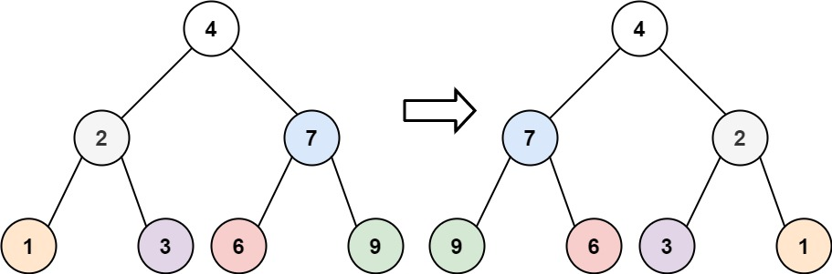

翻转二叉树
题目
给你一棵二叉树的根节点 root ，翻转这棵二叉树，并返回其根节点。
示例 1：

输入： root = [4,2,7,1,3,6,9]
输出： [4,7,2,9,6,3,1]
示例 2：

输入： root = [2,1,3]
输出： [2,3,1]
示例 3：
输入： root = []
输出： []
提示：
- 树中节点数目范围在
[0, 100]内 -100 <= Node.val <= 100
/**
* Definition for a binary tree node.
* function TreeNode(val, left, right) {
* this.val = (val===undefined ? 0 : val)
* this.left = (left===undefined ? null : left)
* this.right = (right===undefined ? null : right)
* }
*/
/**
* @param {TreeNode} root
* @return {TreeNode}
*/
var invertTree = function(root) {
};参考答案
思路与算法
这是一道很经典的二叉树问题。显然，我们从根节点开始，递归地对树进行遍历，并从叶子节点先开始翻转。如果当前遍历到的节点 root 的左右两棵子树都已经翻转，那么我们只需要交换两棵子树的位置，即可完成以 root 为根节点的整棵子树的翻转。
代码
var invertTree = function(root) {
if (root === null) {
return null;
}
const left = invertTree(root.left);
const right = invertTree(root.right);
root.left = right;
root.right = left;
return root;
};复杂度分析
- 时间复杂度：O(N)，其中 N 为二叉树节点的数目。我们会遍历二叉树中的每一个节点，对每个节点而言，我们在常数时间内交换其两棵子树。
- 空间复杂度：O(N)。使用的空间由递归栈的深度决定，它等于当前节点在二叉树中的高度。在平均情况下，二叉树的高度与节点个数为对数关系，即 O(log N)。而在最坏情况下，树形成链状，空间复杂度为 O(N)。
本答案由“前端面试题宝典”收集整理，PC端访问请前往： https://fe.ecool.fun/